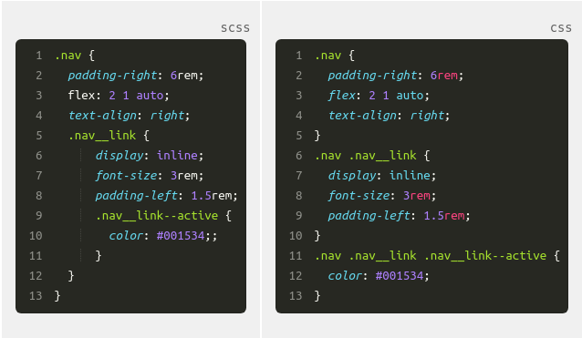

indenter vos éléments et modificateurs au sein de leur bloc parent:
.nav {
padding-right: 6rem;
flex: 2 1 auto;
text-align: right;
.nav__link {
display: inline;
font-size: 3rem;
padding-left: 1.5rem;
.nav__link--active {
color: #001534;
}
}
}
Regardez donc une écriture utilisant le nesting dans un préprocesseur, à gauche, avec le résultat en CSS classique à droite :
Les variables vous permettent de stocker des valeurs répétées fréquemment, comme par exemple les couleurs et les mensurations, dans un élément unique que vous pouvez réutiliser à travers l’ensemble de votre code. Imaginez que vous avez utilisé une nuance de vert des centaines de fois dans un site, mais que vous décidez de le changer en rouge. Grâce aux variables, il vous suffit de faire le changement une seule fois et il sera répercuté partout où la variable a été utilisée. Un seul changement est plus propre et facile que des centaines
Les boucles, qui automatisent les tâches répétitives telles que la création d’une série de modificateurs de couleurs, par exemple, vous épargnent un vrai calvaire tout en gardant une codebase plus petite et plus simple à gérer :
Les opérations logiques vous permettent d’écrire un même bloc de code que vous pouvez utiliser dans différentes circonstances. Ex: le fond est bleu foncé, alors passer le texte en blanc. Avec le temps, cela vous donne une codebase plus petite, plus concise qui est donc beaucoup plus facile à maintenir.
Les préprocesseurs CSS vous permettent d’imbriquer votre code (on appelle ça le nesting) pour créer une hiérarchie plus facile à lire et regrouper des morceaux de code entre eux.
Il existe plein de préprocesseurs, mais le plus courant est Sass, qui signifie Syntactically Awesome Style Sheets (“Feuilles de style syntaxiquement fantastiques”).
Au-delà du nesting, les préprocesseurs vous permettent d’utiliser des fonctionnalités de programmation pour créer une codebase plus maintenable, tout en diminuant les énormes quantités de code à écrire.